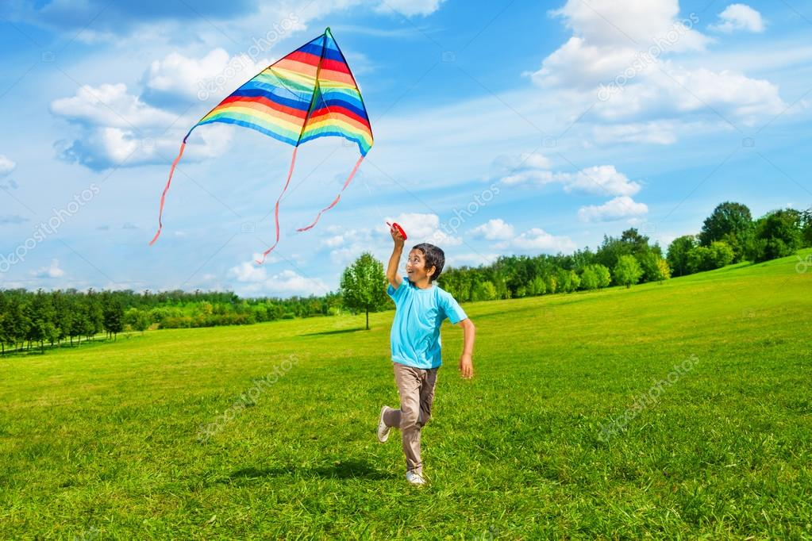
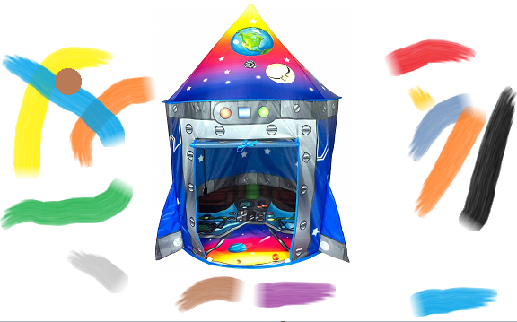
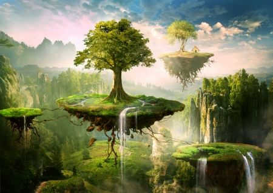
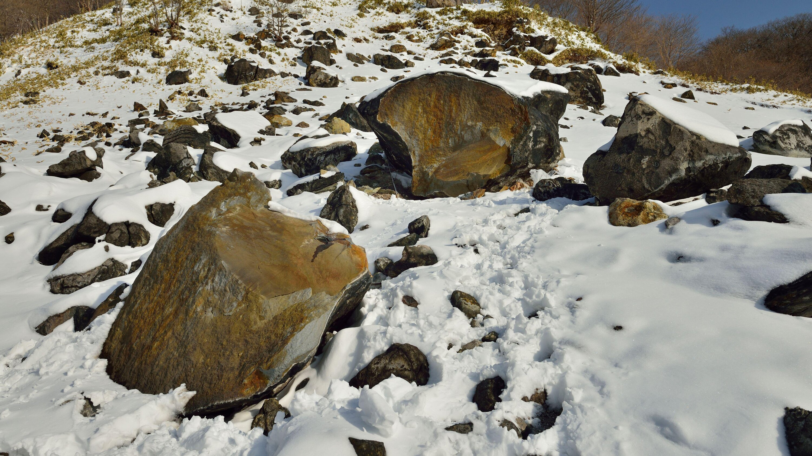

We see the main character, a young boy named Jack, playing in a park. He's flying a kite and having fun, when suddenly a gust of wind pulls the kite away from him. He chases after it, but the kite is blown higher and higher until it disappears into the clouds.
Arrival
Jack is determined to get his kite back, so he decides to build a rocket ship to fly into the clouds. He collects materials and works hard, but finally he builds a rocket ship that looks like a giant kite. He launches the ship and flies up into the clouds.
Discovery
As Jack reaches the clouds, he discovers a magical world full of floating islands and strange creatures. He lands his rocket ship on one of the islands and begins to explore. He meets a group of friendly creatures who offer to help him find his lost kite.
Adventure
Jack and his new friends embark on an adventure through the floating islands, encountering obstacles and challenges along the way. They have to navigate treacherous landscapes, avoid dangerous creatures, and solve puzzles to progress. During their journey, they discover that an evil sorcerer has stolen the light from the sky, causing the magical world to become dark and dangerous.
Struggle
Jack and his friends realize that they must restore the light to the sky in order to save the magical world. They embark on a quest to collect the three sacred stones that hold the power to restore the light. However, the evil sorcerer and his minions are hot on their trail, making the quest more difficult and dangerous than ever.
Triumph
After overcoming many obstacles and facing the sorcerer in an epic battle, Jack and his friends finally collect the three sacred stones and restore the light to the sky. The magical world is restored to its former glory, and the creatures celebrate with a grand feast. Jack is awarded a medal of honor for his bravery and determination.
Return
As Jack says goodbye to his new friends and takes off in his rocket ship, he reflects on his incredible adventure in the clouds. He lands back in the park, where his parents and friends have been looking for him. He happily shows them his kite and tells them about his amazing journey. He also makes a new friend in the park, a little girl who is fascinated by his rocket ship.
Conclusion
The camera pans up to the sky, where we see the floating islands and the magical world that Jack discovered. We hear his voice
 encountering obstacles and challenges along the way. They have to navigate treacherous landscapes, avoid dangerous creatures, and solve puzzles to progress. During their journey, they discover that an evil sorcerer has stolen the light from the sky,
encountering obstacles and challenges along the way. They have to navigate treacherous landscapes, avoid dangerous creatures, and solve puzzles to progress. During their journey, they discover that an evil sorcerer has stolen the light from the sky, causing the magical world to become dark and dangerous.
causing the magical world to become dark and dangerous. He happily shows them his kite and tells them about his amazing journey. He also makes a new friend in the park, a little girl who is fascinated by his rocket ship.
He happily shows them his kite and tells them about his amazing journey. He also makes a new friend in the park, a little girl who is fascinated by his rocket ship.